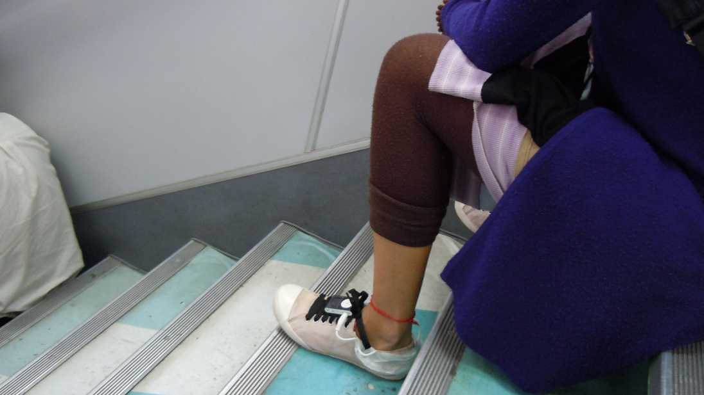
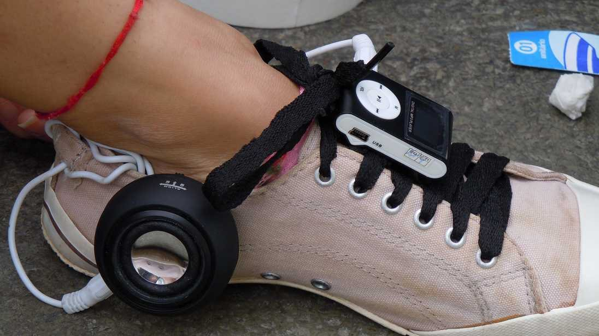

Rádio Lugar
Sound recording in preparation.
Shoes with loudspeakers on the ferry crossing. Dancers turn the journey into a performance, and passengers into an audience.
- Materials
- MP3 players and loudspeakers sewn onto ordinary shoes
- Dimensions
- Variable dimensions
- Venue
- Rio–Niterói ferry and Praça XV, Rio de Janeiro — Projeto EME>> Conexão Artes Visuais, Funarte

